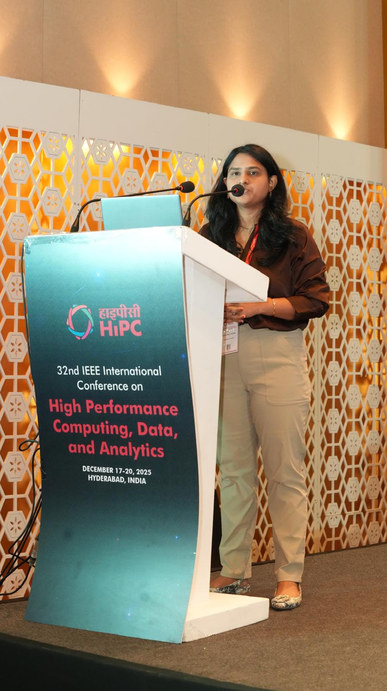
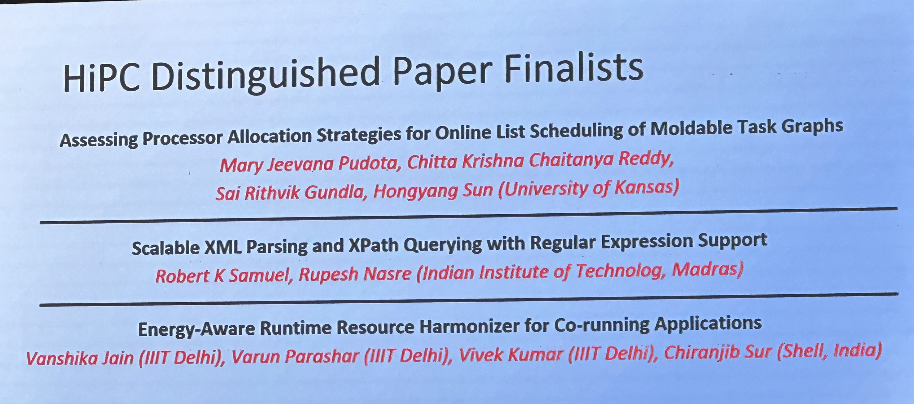
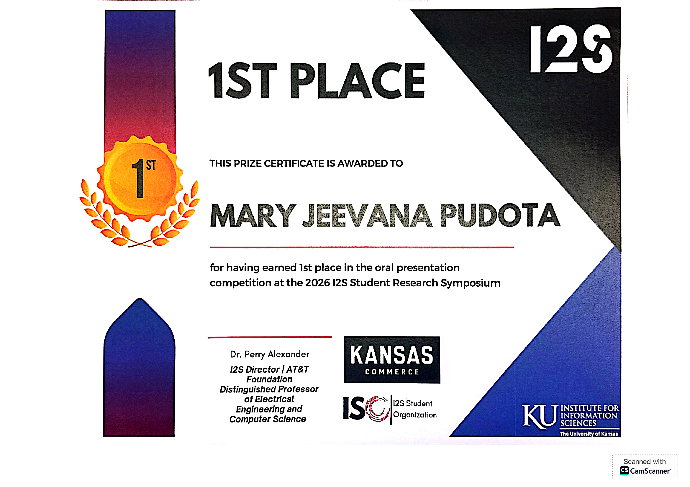

Online Scheduling
Scheduling moldable task graphs when tasks become available dynamically as their dependencies complete.
Ph.D. Candidate · University of Kansas
I work at the intersection of high-performance computing, scheduling algorithms, resource allocation, and machine learning, with a focus on improving the efficiency of modern computing systems.
About
I am a Ph.D. candidate in Computer Science at the University of Kansas with research interests in High-Performance Computing and Machine Learning.
My research focuses on scheduling and resource allocation for computationally intensive workloads, particularly online scheduling of moldable task graphs.
I am interested in designing efficient scheduling strategies that improve resource utilization and reduce application completion time. My research includes processor and multi-resource allocation, scheduling algorithms, task-priority policies, performance modeling, Bayesian optimization, workflow scheduling, and empirical evaluation of HPC systems.
Research
Scheduling moldable task graphs when tasks become available dynamically as their dependencies complete.
Designing and evaluating resource-allocation strategies that balance execution speed with efficient system utilization.
Applying Bayesian optimization and data-driven approaches to tune scheduling parameters using fewer expensive evaluations.
Education
University of Kansas
Research focus: High-Performance Computing, scheduling, resource allocation, and machine learning.
University of Kansas
Thesis: Assessing Processor Allocation Strategies for Online Scheduling of Moldable Task Graphs.
Completed in 2017
Publications
32nd IEEE International Conference on High Performance Computing, Data, and Analytics (HiPC 2025).
Master’s thesis completed at the University of Kansas.
Academic Experience
Conduct research in High-Performance Computing focused on scheduling, resource allocation, performance optimization, online moldable task graphs, priority policies, and Bayesian optimization.
Supported students with conceptual questions, programming assignments, problem solving, and office hours.
Assisted students with functional programming, Haskell, debugging, and understanding programming-language concepts.
Assisted with algorithm design, data structures, complexity analysis, coding, debugging, and problem solving.
Guided high-school students through beginner-friendly Python programming and hands-on computing projects.
Industry Experience
Developed automation solutions, supported data-integration initiatives, implemented automated reporting, and improved SQL performance through query optimization.
Worked on SQL- and Python-based data extraction, analysis, reporting, predictive modeling, visualization, and SAP-related development activities.
Projects
Analyzed Greenland Ice Sheet data and explored predictive modeling approaches including Linear Regression, Lasso, Ridge, and Support Vector Regression.
Developed predictive and analytical models using Python and SQL for business analysis, segmentation, and decision support.
Worked with supervised and unsupervised machine-learning techniques for classification, clustering, and analysis of structured and unstructured data.
Developed automation workflows using Automation Anywhere to automate repetitive enterprise tasks and improve process efficiency.
Technical Skills
Python, SQL, Haskell, C#, HTML, CSS, JavaScript
Online Scheduling, Moldable Task Graphs, Resource Allocation, Scheduling Algorithms, Bayesian Optimization, Parallel Computing, Performance Modeling
Predictive Modeling, Classification, Clustering, Statistical Analysis, Data Manipulation, Data Visualization
Visual Studio, PyCharm, Eclipse, Automation Anywhere, Hadoop, SAP, SQL Databases
Presentations & Recognition

Presented at the 32nd IEEE International Conference on High Performance Computing, Data, and Analytics in Hyderabad, India.

Our paper was selected as a Distinguished Paper Finalist at IEEE HiPC 2025.

Secured first place in the oral presentation competition at the 2026 I2S Student Research Symposium.
Contact
I am happy to connect regarding research, academic collaboration, High-Performance Computing, scheduling, machine learning, and related opportunities.